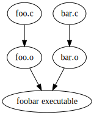

Soft Intro to Makefiles
Author: Yehowshua Immanuel
PDF VersionSoftware is often built in stages. Suppose you had some source files that went through the following stages:
- compiler: source \rightarrow object
- linker: object \rightarrow executable
The dependency build graph for a program called foobar might look like this:

It is possible to write a single monolithic script that rebuilds every file at each stage every time you wish to rebuild the final executable. But if you only changed one file, this is an inefficient way to rebuild the executable. You should only rebuild the objects that depend on the files you changed, and then relink the new object and old objects together to build the executable.
Makefiles allow you to build a dependency graph via rules that state the dependencies of generated files at various stages.
Makefiles are executed with $make which consumes a makefile
(usually named makefile or Makefile with no file
extension), generates, and finally executes the dependency graph,
only executing graph nodes with children that are younger than
the parents.
Format¶
Makefiles specify the dependency graph using the following format.
parent: child1 child2 ... childN
#the command below tells the makefile how
#to build the parents from children
$commandThe above snippet is more commonly referred to as a makefile rule.
You can learn more about makefile rules here.
The makefile used in the intro assignment, has no rules in it directly. Instead, it imports rules from another file with the line:
#included for cocotb
include $(shell cocotb-config --makefiles)/Makefile.simCocotb uses a makefile because the simulators it supports convert RTL source files into executables using multiple stages. Thus, makefiles allow Cocotb to only rebuild changed files and their respective parents before it invokes simulation execution.